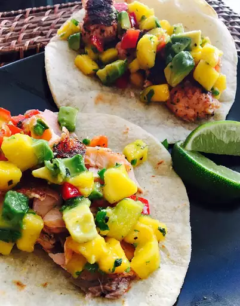

Blackened Salmon Tacos with Chunky Mango Avocado Salsa

Home
Description
This is a quick and easy recipe that you are sure to enjoy. Healthy and delish!
Ingredients
- 3 ripe mangoes - peeled, pitted, and diced
- 1 avocado - peeled, pitted, and diced
- 1 orange or red bell pepper, diced
- 1 jalapeno pepper, seeded and diced
- 1 lime, juiced
- 2 tablespoons chopped fresh cilantro
- 1 pinch salt
- 1 tablespoon sweet and spicy seafood rub, or to taste
- 1/2teaspoon chili powder, or to taste
- salt and ground black pepper to taste
- 2 skin-on salmon fillets
- 2 tablespoons olive oil, or as needed, divided
- 6 corn tortillas
- 3 large limes, cut into wedges
Steps
- Combine mangoes, avocado, orange bell pepper, and jalapeno in a large bowl to make salsa. Add lime juice, cilantro, and salt; mix to combine. Cover with plastic wrap and refrigerate.
- Sprinkle seafood rub, chili powder, salt, and black pepper over 1 side of each salmon steak; rub in with your fingers until evenly distributed.
- Coat the bottom of a large skillet with olive oil and heat over medium-high heat. Add salmon skin-side down and cook until skin is crisp, 4 to 5 minutes. Flip salmon and carefully peel off skin. Season top with seafood rub, chili powder, salt and black pepper. Continue cooking until lightly browned on the second side and salmon flakes easily with a fork, 4 to 5 minutes.
- Slice each salmon fillet lengthwise to create 6 pieces.
- Lightly oil another skillet over medium heat. Pan-fry corn tortillas, one at a time, until heated through and pliable, about 30 seconds per side.
- Place 1 piece of salmon on each tortilla. Top with salsa. Squeeze a wedge of lime on top.